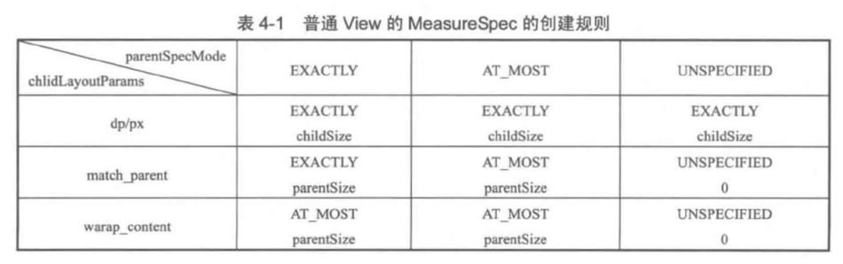

基于android-29
1. 构造方法
LinearLayout的构造方法主要是读取xml设置的参数
2. onMeasure
@Override
protected void onMeasure(int widthMeasureSpec, int heightMeasureSpec) {
if (mOrientation == VERTICAL) {
measureVertical(widthMeasureSpec, heightMeasureSpec);
} else {
measureHorizontal(widthMeasureSpec, heightMeasureSpec);
}
}
2.1. measureVerticaly
LinearLayout有个选项：android:measureWithLargestChild，该属性为true的时候，所有带权重的子元素都会具有最大子元素的最小尺寸。一般为false，下面的分析只讨论false的情况。
void measureVertical(int widthMeasureSpec, int heightMeasureSpec) {
// 所有 childView 的高度和 + 本身的 padding，注意：它和 LinearLayout 本身的高度是不同的
mTotalLength = 0;
int maxWidth = 0;// 所有 childView 中宽度的最大值
int childState = 0;
int alternativeMaxWidth = 0;// 所有 layout_weight <= 0 的 childView 中宽度的最大值
int weightedMaxWidth = 0;// 所有 layout_weight >0 的 childView 中宽度的最大值
boolean allFillParent = true;
float totalWeight = 0;// 所有 childView 的 weight 之和
final int count = getVirtualChildCount();
final int widthMode = MeasureSpec.getMode(widthMeasureSpec);
final int heightMode = MeasureSpec.getMode(heightMeasureSpec);
boolean matchWidth = false;
boolean skippedMeasure = false;
final int baselineChildIndex = mBaselineAlignedChildIndex;
final boolean useLargestChild = mUseLargestChild;
int largestChildHeight = Integer.MIN_VALUE;
int consumedExcessSpace = 0;
int nonSkippedChildCount = 0;
// 计算每一个子View的高宽度
for (int i = 0; i < count; ++i) {
final View child = getVirtualChildAt(i);
// ...
final LayoutParams lp = (LayoutParams) child.getLayoutParams();
totalWeight += lp.weight;
final boolean useExcessSpace = lp.height == 0 && lp.weight > 0;
if (heightMode == MeasureSpec.EXACTLY && useExcessSpace) {
// Optimization: don't bother measuring children who are only
// laid out using excess space. These views will get measured
// later if we have space to distribute.
final int totalLength = mTotalLength;
mTotalLength = Math.max(totalLength, totalLength + lp.topMargin + lp.bottomMargin);
skippedMeasure = true;
} else {
if (useExcessSpace) {
// The heightMode is either UNSPECIFIED or AT_MOST, and
// this child is only laid out using excess space. Measure
// using WRAP_CONTENT so that we can find out the view's
// optimal height. We'll restore the original height of 0
// after measurement.
lp.height = LayoutParams.WRAP_CONTENT;
}
// 如果之前或者当前的子View没有设置weight，就measure子View。
final int usedHeight = totalWeight == 0 ? mTotalLength : 0;
// measureChildBeforeLayout内部会调用子View的measure方法，开启子View的测试过程。
measureChildBeforeLayout(child, i, widthMeasureSpec, 0,
heightMeasureSpec, usedHeight);
final int childHeight = child.getMeasuredHeight();
if (useExcessSpace) {
// Restore the original height and record how much space
// we've allocated to excess-only children so that we can
// match the behavior of EXACTLY measurement.
lp.height = 0;
consumedExcessSpace += childHeight;
}
final int totalLength = mTotalLength;
// 该子View的高度测量完成，将其加到mTotalLength
mTotalLength = Math.max(totalLength, totalLength + childHeight + lp.topMargin +
lp.bottomMargin + getNextLocationOffset(child));
// 。。。
}
// 。。。
// 测量宽度部分
boolean matchWidthLocally = false;
// 子View需要match parent，而父View是wrap content的情况
if (widthMode != MeasureSpec.EXACTLY && lp.width == LayoutParams.MATCH_PARENT) {
matchWidth = true;
matchWidthLocally = true;
}
final int margin = lp.leftMargin + lp.rightMargin;
final int measuredWidth = child.getMeasuredWidth() + margin;
maxWidth = Math.max(maxWidth, measuredWidth);
childState = combineMeasuredStates(childState, child.getMeasuredState());
allFillParent = allFillParent && lp.width == LayoutParams.MATCH_PARENT;
if (lp.weight > 0) {
/*
* Widths of weighted Views are bogus if we end up
* remeasuring, so keep them separate.
*/
weightedMaxWidth = Math.max(weightedMaxWidth,
matchWidthLocally ? margin : measuredWidth);
} else {
alternativeMaxWidth = Math.max(alternativeMaxWidth,
matchWidthLocally ? margin : measuredWidth);
}
i += getChildrenSkipCount(child, i);
}
// 加上分割线的高度
if (nonSkippedChildCount > 0 && hasDividerBeforeChildAt(count)) {
mTotalLength += mDividerHeight;
}
// ...
// 加上父View的padding
mTotalLength += mPaddingTop + mPaddingBottom;
int heightSize = mTotalLength;
// Check against our minimum height
heightSize = Math.max(heightSize, getSuggestedMinimumHeight());
// 将计算的高度和heightMeasureSpec相协调，heightMeasureSpec的值受LinearLayout父View影响，比如不会超过父View的高度。
int heightSizeAndState = resolveSizeAndState(heightSize, heightMeasureSpec, 0);
heightSize = heightSizeAndState & MEASURED_SIZE_MASK;
// remainingExcess可以认为是LinearLayout的高度减去以及测量过的高度的值，即未测量的剩余大小。
int remainingExcess = heightSize - mTotalLength
+ (mAllowInconsistentMeasurement ? 0 : consumedExcessSpace);
if (skippedMeasure
|| ((sRemeasureWeightedChildren || remainingExcess != 0) && totalWeight > 0.0f)) {
float remainingWeightSum = mWeightSum > 0.0f ? mWeightSum : totalWeight;
mTotalLength = 0;
// 根据剩余空间计算子View的大小
for (int i = 0; i < count; ++i) {
final View child = getVirtualChildAt(i);
if (child == null || child.getVisibility() == View.GONE) {
continue;
}
final LayoutParams lp = (LayoutParams) child.getLayoutParams();
final float childWeight = lp.weight;
if (childWeight > 0) {
// share为在剩余大小下，根据weight计算的大小
final int share = (int) (childWeight * remainingExcess / remainingWeightSum);
remainingExcess -= share;
remainingWeightSum -= childWeight;
final int childHeight;
// 不考虑mUseLargestChild的情况
if (mUseLargestChild && heightMode != MeasureSpec.EXACTLY) {
childHeight = largestChildHeight;
} else if (lp.height == 0 && (!mAllowInconsistentMeasurement
|| heightMode == MeasureSpec.EXACTLY)) {
// 如果子View高度为0，且LinearLayout的高度是精确值，那么子View就使用share的值。
childHeight = share;
} else {
// 如果子View的高度有值，那么就加上share值。
childHeight = child.getMeasuredHeight() + share;
}
final int childHeightMeasureSpec = MeasureSpec.makeMeasureSpec(
Math.max(0, childHeight), MeasureSpec.EXACTLY);
final int childWidthMeasureSpec = getChildMeasureSpec(widthMeasureSpec,
mPaddingLeft + mPaddingRight + lp.leftMargin + lp.rightMargin,
lp.width);
child.measure(childWidthMeasureSpec, childHeightMeasureSpec);
childState = combineMeasuredStates(childState, child.getMeasuredState()
& (MEASURED_STATE_MASK>>MEASURED_HEIGHT_STATE_SHIFT));
}
final int margin = lp.leftMargin + lp.rightMargin;
final int measuredWidth = child.getMeasuredWidth() + margin;
maxWidth = Math.max(maxWidth, measuredWidth);
boolean matchWidthLocally = widthMode != MeasureSpec.EXACTLY &&
lp.width == LayoutParams.MATCH_PARENT;
alternativeMaxWidth = Math.max(alternativeMaxWidth,
matchWidthLocally ? margin : measuredWidth);
allFillParent = allFillParent && lp.width == LayoutParams.MATCH_PARENT;
final int totalLength = mTotalLength;
mTotalLength = Math.max(totalLength, totalLength + child.getMeasuredHeight() +
lp.topMargin + lp.bottomMargin + getNextLocationOffset(child));
}
// Add in our padding
mTotalLength += mPaddingTop + mPaddingBottom;
} else {
alternativeMaxWidth = Math.max(alternativeMaxWidth,
weightedMaxWidth);
// ...
}
if (!allFillParent && widthMode != MeasureSpec.EXACTLY) {
maxWidth = alternativeMaxWidth;
}
maxWidth += mPaddingLeft + mPaddingRight;
// maxWidth为加上padding、子View的margin以及最大子View宽度
maxWidth = Math.max(maxWidth, getSuggestedMinimumWidth());
// 这一步设置之后，LinearLayout可以getMeasureXXX了。
setMeasuredDimension(resolveSizeAndState(maxWidth, widthMeasureSpec, childState),
heightSizeAndState);
if (matchWidth) {
forceUniformWidth(count, heightMeasureSpec);
}
}
2.1.1. measureChildBeforeLayout
void measureChildBeforeLayout(View child, int childIndex,
int widthMeasureSpec, int totalWidth, int heightMeasureSpec,
int totalHeight) {
measureChildWithMargins(child, widthMeasureSpec, totalWidth,
heightMeasureSpec, totalHeight);
}
2.1.2. ViewGroup#measureChildWithMargins
protected void measureChildWithMargins(View child,
int parentWidthMeasureSpec, int widthUsed,
int parentHeightMeasureSpec, int heightUsed) {
final MarginLayoutParams lp = (MarginLayoutParams) child.getLayoutParams();
// 测量子View过程中，会加上父View设定的padding和子View设定的margin。
final int childWidthMeasureSpec = getChildMeasureSpec(parentWidthMeasureSpec,
mPaddingLeft + mPaddingRight + lp.leftMargin + lp.rightMargin
+ widthUsed, lp.width);
final int childHeightMeasureSpec = getChildMeasureSpec(parentHeightMeasureSpec,
mPaddingTop + mPaddingBottom + lp.topMargin + lp.bottomMargin
+ heightUsed, lp.height);
child.measure(childWidthMeasureSpec, childHeightMeasureSpec);
}
2.1.3. ViewGroup#getChildMeasureSpec
// spec是父View的spec
public static int getChildMeasureSpec(int spec, int padding, int childDimension) {
int specMode = MeasureSpec.getMode(spec);
int specSize = MeasureSpec.getSize(spec);
// 父View还剩下的空间
int size = Math.max(0, specSize - padding);
int resultSize = 0;
int resultMode = 0;
switch (specMode) {
case MeasureSpec.EXACTLY:
if (childDimension >= 0) {
resultSize = childDimension;
resultMode = MeasureSpec.EXACTLY;
} else if (childDimension == LayoutParams.MATCH_PARENT) {
resultSize = size;
resultMode = MeasureSpec.EXACTLY;
} else if (childDimension == LayoutParams.WRAP_CONTENT) {
resultSize = size;
resultMode = MeasureSpec.AT_MOST;
}
break;
case MeasureSpec.AT_MOST:
if (childDimension >= 0) {
resultSize = childDimension;
resultMode = MeasureSpec.EXACTLY;
} else if (childDimension == LayoutParams.MATCH_PARENT) {
resultSize = size;
resultMode = MeasureSpec.AT_MOST;
} else if (childDimension == LayoutParams.WRAP_CONTENT) {
resultSize = size;
resultMode = MeasureSpec.AT_MOST;
}
break;
// Parent asked to see how big we want to be
case MeasureSpec.UNSPECIFIED:
if (childDimension >= 0) {
// Child wants a specific size... let him have it
resultSize = childDimension;
resultMode = MeasureSpec.EXACTLY;
} else if (childDimension == LayoutParams.MATCH_PARENT) {
// Child wants to be our size... find out how big it should
// be
resultSize = View.sUseZeroUnspecifiedMeasureSpec ? 0 : size;
resultMode = MeasureSpec.UNSPECIFIED;
} else if (childDimension == LayoutParams.WRAP_CONTENT) {
// Child wants to determine its own size.... find out how
// big it should be
resultSize = View.sUseZeroUnspecifiedMeasureSpec ? 0 : size;
resultMode = MeasureSpec.UNSPECIFIED;
}
break;
}
//noinspection ResourceType
return MeasureSpec.makeMeasureSpec(resultSize, resultMode);
}

2.1.4. View#resolveSizeAndState
public static int resolveSizeAndState(int size, int measureSpec, int childMeasuredState) {
final int specMode = MeasureSpec.getMode(measureSpec);
final int specSize = MeasureSpec.getSize(measureSpec);
final int result;
switch (specMode) {
case MeasureSpec.AT_MOST:
if (specSize < size) {
result = specSize | MEASURED_STATE_TOO_SMALL;
} else {
result = size;
}
break;
case MeasureSpec.EXACTLY:
result = specSize;
break;
case MeasureSpec.UNSPECIFIED:
default:
result = size;
}
return result | (childMeasuredState & MEASURED_STATE_MASK);
}
resolveSizeAndState方法的作用是将size（测量的中间值）和measureSpec相协调。measureSpec和父View有关。
- 如果View设置的是wrap content，那么View的大小不会超过specSize。
- 如果View的大小是精确值，那么就使用该值。
2.1.5. 小结
垂直方向的几种情况：
测量的结果会加上LinearLayout的padding以及子View的margin。如果没有特殊说明，下面总结说的值都是加上这部分值的。
- 子View不使用weight的情况 依次调用子View的measure方法，测量子View。 如果LinearLayout的宽度有确切的值（指定值或者match parent），那么measure的结果就是该值。 如果LinearLayout的宽度没有确切的值（wrap content），measure的结果是子View最大宽度，且不超过LinearLayout父View的宽度（见View#resolveSizeAndState）。 LinearLayout的高度同理，有一点不同，如果LinearLayout的高度是wrap content，那么measure的结果是子View高度的总和，且不超过LinearLayout父View的高度。
- 子View存在使用weight的情况 在依次measure子View的过程中，如果发现有一个子View设置了weight，那么 如果LinearLayout的高度是精确值，
- 没有子View的情况 和View的情况差不多，要么使用设定的初始值（指定的宽高或者背景宽高），要么是0。